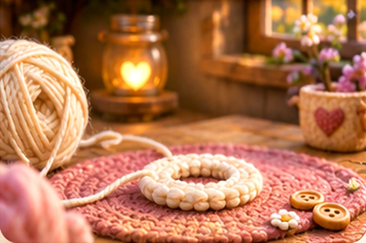
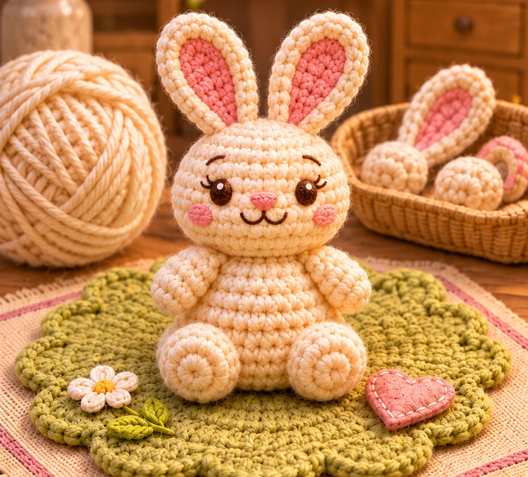

ГЛАВА 01✦ТВОЯ ПЕРВАЯ ИСТОРИЯ
Кроличья полянка
Свяжи маленького друга, и он поселится в твоём мире
Начальное кольцоСначала — одна маленькая петля
0%
До следующего открытия: 12%Этап 1 из 8


Только начинается волшебство...
160 ниточек Автовязание 3,0 очка/сек
Нажимай, чтобы быстрее открыть следующий этап
Твоя уютная мастерская
✧ У тебя получилось! ✧
Теперь кролик ждёт тебя на полянке.